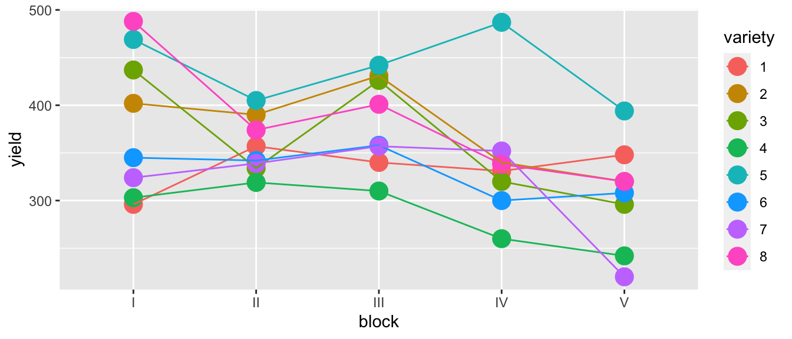
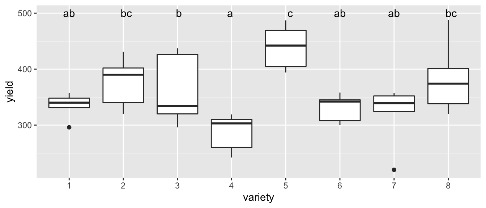
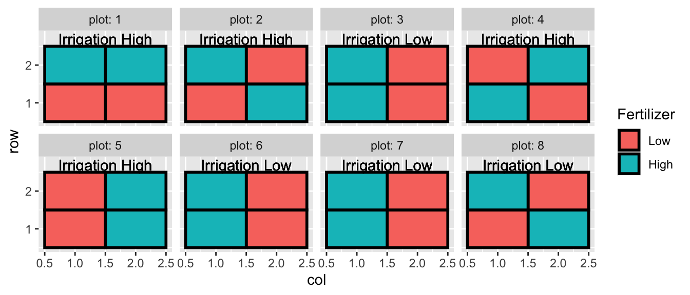

Chapter 16 Block Designs
# packages for this chapter
library(tidyverse) # ggplot2, dplyr, etc...
library(emmeans) # TukeyLetters stuffOften there are covariates in the experimental units that are known to affect the response variable and must be taken into account. Ideally an experimenter can group the experimental units into blocks where the within block variance is small, but the block to block variability is large. For example, in testing a drug to prevent heart disease, we know that gender, age, and exercise levels play a large role. We should partition our study participants into gender, age, and exercise groups and then randomly assign the treatment (placebo vs drug) within the group. This will ensure that we do not have a gender, age, and exercise group that has all placebo observations.
Often blocking variables are not the variables that we are primarily interested in, but must nevertheless be considered. We call these nuisance variables. We already know how to deal with these variables by adding them to the model, but there are experimental designs where we must be careful because the experimental treatments are nested.
Example 1. An agricultural field study has three fields in which the researchers will evaluate the quality of three different varieties of barley. Due to how they harvest the barley, we can only create a maximum of three plots in each field. In this example we will block on field since there might be differences in soil type, drainage, etc from field to field. In each field, we will plant all three varieties so that we can tell the difference between varieties without the block effect of field confounding our inference. In this example, the varieties are nested within the fields.
| Field 1 | Field 2 | Field 3 | |
|---|---|---|---|
| Plot 1 | Variety A | Variety C | Variety B |
| Plot 2 | Variety B | Variety A | Variety C |
| Plot 3 | Variety C | Variety B | Variety A |
Example 2. We are interested in how a mouse responds to five different materials inserted into subcutaneous tissue to evaluate the materials’ use in medicine. Each mouse can have a maximum of 3 insertions. Here we will block on the individual mice because even lab mice have individual variation. We actually are not interested in estimating the effect of the mice because they aren’t really of interest, but the mouse block effect should be accounted for before we make any inferences about the materials. Notice that if we only have one insertion per mouse, then the mouse effect will be confounded with materials.
16.1 Randomized Complete Block Design (RCBD)
The dataset oatvar in the faraway library contains information about an experiment on eight different varieties of oats. The area in which the experiment was done had some systematic variability and the researchers divided the area up into five different blocks in which they felt the area inside a block was uniform while acknowledging that some blocks are likely superior to others for growing crops. Within each block, the researchers created eight plots and randomly assigned a variety to a plot. This type of design is called a Randomized Complete Block Design (RCBD) because each block contains all possible levels of the factor of primary interest.
data('oatvar', package='faraway')
ggplot(oatvar, aes(y=yield, x=block, color=variety)) +
geom_point(size=5) +
geom_line(aes(x=as.integer(block))) # connect the dots
While there is one unusual observation in block IV, there doesn’t appear to be a blatant interaction. We will consider the interaction shortly. For the main effects model of yield ~ block + variety we have \(p=12\) parameters and \(28\) residual degrees of freedom because \[\begin{aligned} df_\epsilon &= n-p \\ &= n-\left(1+\left[\left(I-1\right)+\left(J-1\right)\right]\right) \\ &= 40-\left(1+\left[\left(5-1\right)+\left(8-1\right)\right]\right) \\ &= 40-12 \\ &= 28 \end{aligned}\]
m1 <- lm( yield ~ block + variety, data=oatvar)
anova(m1)## Analysis of Variance Table
##
## Response: yield
## Df Sum Sq Mean Sq F value Pr(>F)
## block 4 33396 8348.9 6.2449 0.001008 **
## variety 7 77524 11074.8 8.2839 1.804e-05 ***
## Residuals 28 37433 1336.9
## ---
## Signif. codes: 0 '***' 0.001 '**' 0.01 '*' 0.05 '.' 0.1 ' ' 1# plot(m1) # check diagnostic plots - they are fine...Because this is an orthogonal design, the sums of squares doesn’t change regardless of which order we add the factors, but if we remove one or two observations, they would.
In determining the significance of variety the above F-value and p-value is correct. We have 40 observations (5 per variety), and after accounting for the model structure (including the extraneous blocking variable), we have \(28\) residual degrees of freedom.
But the F-value and p-value for testing if block is significant is nonsense! Imagine that variety didn’t matter we just have 8 replicate samples per block, but these aren’t true replicates, they are what is called pseudoreplicates. Imagine taking a sample of \(n=3\) people and observing their height at 1000 different points in time during the day. You don’t have 3000 data points for estimating the mean height in the population, you have 3. Unless we account for the this, the inference for the block variable is wrong. In this case, we only have one observation for each block, so we can’t do any statistical inference at the block scale!
Fortunately in this case, we don’t care about the blocking variable and including it in the model was simply guarding us in case there was a difference, but I wasn’t interested in estimating it. If the only covariate we care about is the most deeply nested effect, then we can do the usual analysis and recognize the p-value for the blocking variable is nonsense, and we don’t care about it.
# Ignore any p-values regarding block, but I'm happy with the analysis for variety
letter_df <- emmeans(m1, ~variety) %>%
multcomp::cld(Letters=letters) %>%
dplyr::select(variety, .group) %>%
mutate(yield = 500)
ggplot(oatvar, aes(x=variety, y=yield)) +
geom_boxplot() +
geom_text( data=letter_df, aes(label=.group) ) 
However it would be pretty sloppy to not do the analysis correctly because our blocking variable might be something we care about. To make R do the correct analysis, we have to denote the nesting. In this case we have block-to-block errors, and then variability within blocks. To denote the nesting we use the Error() function within our formula. By default, Error() just creates independent error terms, but when we add a covariate, it adds the appropriate nesting.
m3 <- aov( yield ~ variety + Error(block), data=oatvar)
summary(m3)##
## Error: block
## Df Sum Sq Mean Sq F value Pr(>F)
## Residuals 4 33396 8349
##
## Error: Within
## Df Sum Sq Mean Sq F value Pr(>F)
## variety 7 77524 11075 8.284 1.8e-05 ***
## Residuals 28 37433 1337
## ---
## Signif. codes: 0 '***' 0.001 '**' 0.01 '*' 0.05 '.' 0.1 ' ' 1Notice that in our block level, there is no p-value to assess if the blocks are different. This is because we don’t have any replication of the blocks. So our analysis respects that blocks are present, but does not attempt any statistical analyses on them.
16.2 Split-plot designs
There are plenty of experimental designs where we have levels of treatments nested within each other for practical reasons. The literature often gives the example of an agriculture experiment where we investigate the effect of irrigation and fertilizer on the yield of a crop. However because our irrigation system can’t be fine-tuned, we have plots with different irrigation levels and within each plot we have perhaps four subplots that have the fertilizer treatment. To summarize, Irrigation treatments were randomly assigned to plots, and fertilizer treatments were randomly assigned to sub-plots.
## `summarise()` regrouping output by 'plot', 'subplot', 'Fertilizer' (override with `.groups` argument)## # A tibble: 6 x 5
## # Groups: plot, subplot, Fertilizer [6]
## plot subplot Fertilizer Irrigation yield
## <fct> <fct> <fct> <fct> <dbl>
## 1 1 1 Low Low 20.2
## 2 1 2 High Low 24.4
## 3 1 3 Low Low 18.0
## 4 1 4 High Low 21.0
## 5 2 1 Low Low 23.2
## 6 2 2 High Low 26.5
So all together we have 8 plots, and 32 subplots. When I analyze the fertilizer, I have 32 experimental units (the thing I have applied my treatment to), but when analyzing the effect of irrigation, I only have 8 experimental units.
I like to think of this set up as having some lurking variables that act at the plot level (changes in aspect, maybe something related to what was planted prior) and some lurking variables that act on a local subplot scale (maybe variation in clay/silt/sand ratios). So even after I account for Irrigation and Fertilizer treatments, observations within a plot will be more similar to each other than observations in two different plots.
We can think about doing two separate analyses, one for the effect of irrigation, and another for the effect of the fertilizer.
# AgData came from my data package, dsData, (however I did some summarization
# first.)
# To analyze Irrigation, average over the subplots first...
Irrigation.data <- AgData %>%
group_by(plot, Irrigation) %>%
summarise( yield = mean(yield)) %>%
as.data.frame() # the aov command doesn't like tibbles.## `summarise()` regrouping output by 'plot' (override with `.groups` argument)# Now do a standard analysis. I use the aov() command instead of lm()
# because we will shortly do something very tricky that can only be
# done with aov(). For the most part, everything is
# identical from what you are used to.
m <- aov( yield ~ Irrigation, data=Irrigation.data )
anova(m)## Analysis of Variance Table
##
## Response: yield
## Df Sum Sq Mean Sq F value Pr(>F)
## Irrigation 1 26.064 26.0645 3.4281 0.1136
## Residuals 6 45.619 7.6032In this case we see that we have insufficient evidence to conclude that the observed difference between the Irrigation levels could not be due to random chance.
Next we can do the appropriate analysis for the fertilizer, recognizing that all the p-values for the plot effects are nonsense and should be ignored.
m <- aov( yield ~ plot + Fertilizer, data=AgData )
summary(m)## Df Sum Sq Mean Sq F value Pr(>F)
## plot 7 286.73 40.96 3.153 0.0173 *
## Fertilizer 1 0.43 0.43 0.033 0.8572
## Residuals 23 298.83 12.99
## ---
## Signif. codes: 0 '***' 0.001 '**' 0.01 '*' 0.05 '.' 0.1 ' ' 1Ideally I wouldn’t have to do the averaging over the nested observations and we would like to not have the misleading p-values for the plots. To do this, we only have to specify the nesting of the error terms and R will figure out the appropriate degrees of freedom for the covariates.
# To do this right, we have to abandon the general lm() command and use the more
# specialized aov() command. The Error() part of the formula allows me to nest
# the error terms and allow us to do the correct analysis. The order of these is
# to start with the largest/highest level and then work down the nesting.
m2 <- aov( yield ~ Irrigation + Fertilizer + Error(plot/subplot), data=AgData )
summary(m2)##
## Error: plot
## Df Sum Sq Mean Sq F value Pr(>F)
## Irrigation 1 104.3 104.26 3.428 0.114
## Residuals 6 182.5 30.41
##
## Error: plot:subplot
## Df Sum Sq Mean Sq F value Pr(>F)
## Fertilizer 1 0.43 0.43 0.033 0.857
## Residuals 23 298.83 12.99In the output, we see that the ANOVA table row for the Fertilizer is the same for both analyses, but the sums-of-squares for Irrigation are different between the two analyses (because of the averaging) while the F and p values are the same between the two analyses.
What would have happened if we had performed the analysis incorrectly and had too many degrees of freedom for the Irrigation test?
bad.model <- aov( yield ~ Irrigation + Fertilizer, data=AgData)
anova(bad.model)## Analysis of Variance Table
##
## Response: yield
## Df Sum Sq Mean Sq F value Pr(>F)
## Irrigation 1 104.26 104.258 6.2818 0.01806 *
## Fertilizer 1 0.43 0.430 0.0259 0.87324
## Residuals 29 481.31 16.597
## ---
## Signif. codes: 0 '***' 0.001 '**' 0.01 '*' 0.05 '.' 0.1 ' ' 1In this case we would have concluded that we had statistically significant evidence to conclude the Irrigation levels are different. Notice that the sums-of-squares in this wrong analysis match up with the sums-of-squares in the correct design and the only difference is that when we figure out the sum-of-squares for the residuals we split that into different pools. \[\begin{aligned} RSS_{total} &= RSS_{Fertilizer} + RSS_{Irrigation} \\ 456.12 &= 273.64 + 182.5 \end{aligned}\]
When we want to infer if the amount of noise explained by adding Irrigation or Fertilizer is sufficiently large to justify their inclusion into the model, we compare the sum-of-squares value to the RSS but now we have to use the appropriate pool.
A second example of a slightly more complex split plot is given in the package MASS under the dataset oats. From the help file the data describes the following experiment:
The yield of oats from a split-plot field trial using three varieties and four levels of manurial treatment. The experiment was laid out in 6 blocks of 3 main plots, each split into 4 sub-plots. The varieties were applied to the main plots and the manurial treatments to the sub-plots.
This is a lot to digest so lets unpack it. First we have 6 blocks and we’ll replicate the exact same experiment in each block. Within a block, we’ll split it into three sections, which we’ll call plots (within the block). Finally within each plot, we’ll have 4 subplots.
We have 3 varieties of oats, and 4 levels of fertilizer (manure). To each set of 3 plots, we’ll randomly assign the 3 varieties, and to each set of subplots, we’ll assign the fertilizers.
One issue that makes this issue confusing for students is that most texts get lazy and don’t define the blocks, plots, and sub-plots when there are no replicates in a particular level. I prefer to be clear about defining those so.
data('oats', package='MASS')
oats <- oats %>% mutate(
Nf = ordered(N, levels = sort(levels(N))), # make manure an ordered factor
plot = as.integer(V), # plot
subplot = as.integer(Nf)) # sub-plotAs always we first create a graph to examine the data
oats <- oats %>% mutate(B_Plot = interaction(B, plot))
ggplot(oats, aes(x=Nf, y=Y, color=V)) +
facet_grid( B ~ plot, labeller=label_both) +
geom_point() +
geom_line(aes(x=as.integer(Nf)))
This graph also makes me think that variety doesn’t matter and it is unlikely that there an interaction between oat variety and fertilizer level, but we should check.
# What makes sense to me
# m.c <- aov( Y ~ V * Nf + Error(B/plot/subplot), data=oats)Unfortunately the above model isn’t correct because R isn’t smart enough to understand that the levels of plot and subplot are exact matches to the Variety and Fertilizer levels. As a result if I defined the model above, the degrees of freedom will be all wrong because there is too much nesting. So we have to be smart enough to recognize that plot and subplot are actually Variety and Fertilizer.
m.c <- aov( Y ~ V * Nf + Error(B/V/Nf), data=oats)
summary(m.c)##
## Error: B
## Df Sum Sq Mean Sq F value Pr(>F)
## Residuals 5 15875 3175
##
## Error: B:V
## Df Sum Sq Mean Sq F value Pr(>F)
## V 2 1786 893.2 1.485 0.272
## Residuals 10 6013 601.3
##
## Error: B:V:Nf
## Df Sum Sq Mean Sq F value Pr(>F)
## Nf 3 20020 6673 37.686 2.46e-12 ***
## V:Nf 6 322 54 0.303 0.932
## Residuals 45 7969 177
## ---
## Signif. codes: 0 '***' 0.001 '**' 0.01 '*' 0.05 '.' 0.1 ' ' 1Sure enough the interaction term is not significant. We next consider the Variety term.
m.s <- aov( Y ~ V + Nf + Error(B/V/Nf), data=oats)
summary(m.s)##
## Error: B
## Df Sum Sq Mean Sq F value Pr(>F)
## Residuals 5 15875 3175
##
## Error: B:V
## Df Sum Sq Mean Sq F value Pr(>F)
## V 2 1786 893.2 1.485 0.272
## Residuals 10 6013 601.3
##
## Error: B:V:Nf
## Df Sum Sq Mean Sq F value Pr(>F)
## Nf 3 20020 6673 41.05 1.23e-13 ***
## Residuals 51 8291 163
## ---
## Signif. codes: 0 '***' 0.001 '**' 0.01 '*' 0.05 '.' 0.1 ' ' 1We conclude by noticing that the Variety does not matter, but that the fertilizer level is quite significant.
There are many other types of designs out there. For example you might have 5 levels of a factor, but when you split your block into plots, you can only create 3 plots. So not every block will have every level of the factor. This is called Randomized Incomplete Block Designs (RIBD).
You might have a design where you apply even more levels of nesting. Suppose you have a green house study where you have rooms where you can apply a temperature treatment, within the room you have four tables and can apply a light treatment to each table. Finally within each table you can have four trays where can apply a soil treatment to each tray. This is a continuation of the split-plot design and by extending the nesting we can develop split-split-plot and split-split-split-plot designs.
You might have 7 covariates each with two levels (High, Low) and you want to investigate how these influence your response but also allow for second and third order interactions. If you looked at every treatment combination you’d have \(2^7=128\) different treatment combinations and perhaps you only have the budget for a sample of \(n=32\). How should you design your experiment? This question is addressed by fractional factorial designs.
If your research interests involve designing experiments such as these, you should consider taking an Experimental design course.
16.3 Exercises
- ???
- ???
- ???